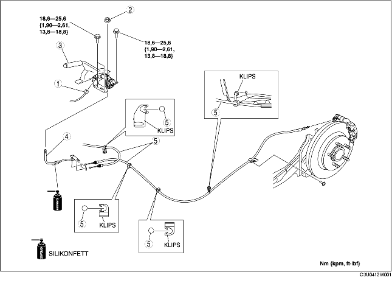

1. Ta loss huvudljuddämparen. (Se DEMONTERING/MONTERING AV AVGASSYSTEMET [ZJ, Z6].) (Se DEMONTERING/MONTERING AV AVGASSYSTEMET [LF].)
2. Demontera värmeisoleringen.
3. Demontera konsolen. (Se DEMONTERING/MONTERING AV KONSOL.)
4. Demontera i den ordning som anges i tabellen.
5. Montera i omvänd ordning mot demonteringen.
6. Efter monteringen, kontrollera slaglängden för parkeringsbromsens spak. (Se KONTROLL AV PARKERINGSBROMSSPAK.)

.
|
1
|
Parkeringsbromsens omkopplare
|
|
2
|
Justermutter
|
|
3
|
Parkeringsbromsens spak
|
|
4
|
Främre parkeringsbromsvajer
|
|
5
|
Bakre parkeringsbromsvajer
|
1. Dra den bakre parkeringsbromsvajern innanför bakre ABS-hjulhastighetsgivarens kablage så som bilden visar.
2. Montera den bakre parkeringsbromsvajern.
1. Montera den främre parkeringsbromsvajern med märket på utjämnaren riktat mot fordonets nedåtsida.